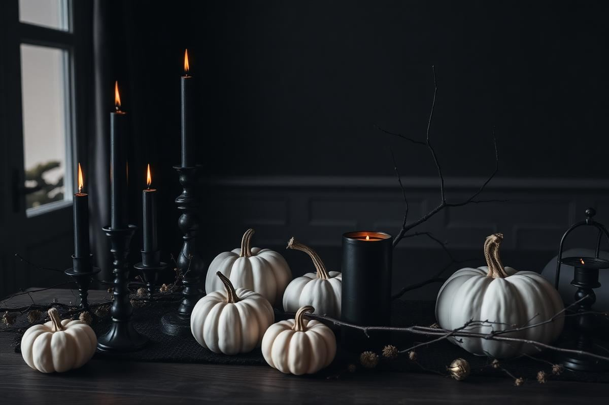
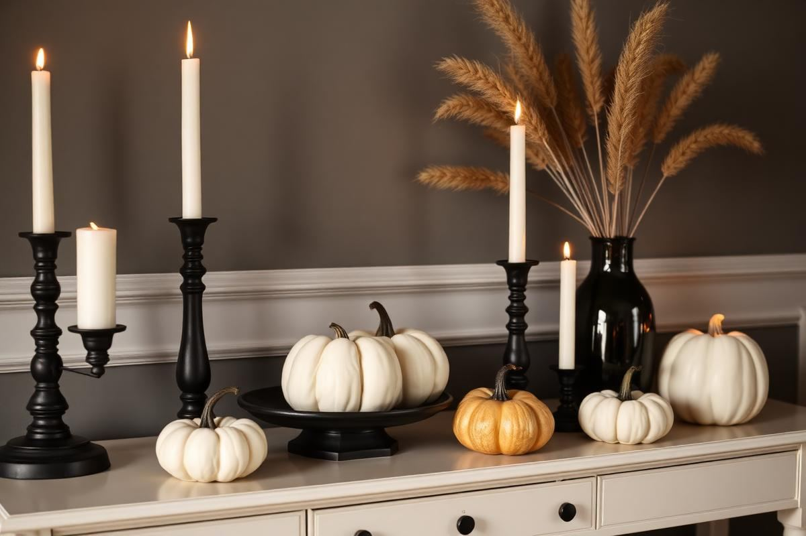
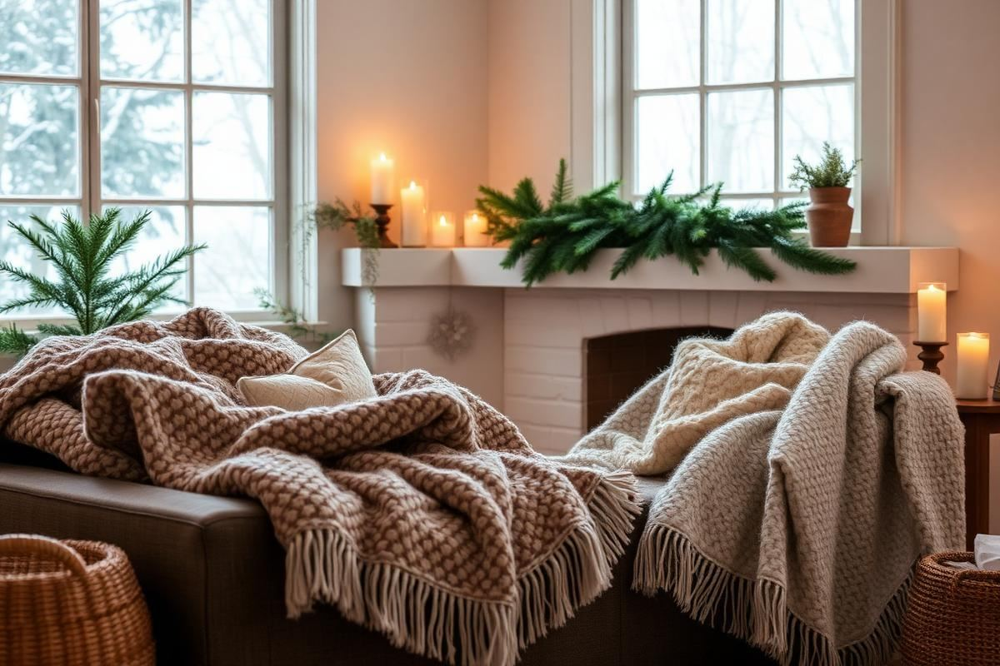
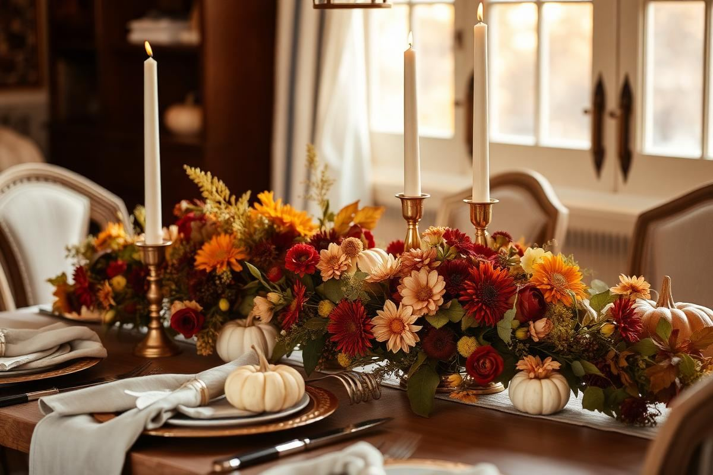

Halloween Home Decor: The Elegant Approach

Halloween Home Decor: The Elegant Approach is one of those topics where a little planning goes a long way. In this guide I walk through the process we use in real homes — not just what looks good in a photo, but what actually holds up over time.
Start here
Before you buy or move anything, measure the space and note how you actually use it. The best-looking room is one that matches how you live, so start with the routines: where you sit, where you drop keys, where the light falls in the afternoon.
The essentials
Focus on the pieces that do the most work. Get those right and the rest of the room comes together with much less effort. Aim for materials that patina rather than degrade, and colors you will still like in five years.
- Choose one clear focal point per room.
- Pick materials that improve with age.
- Layer textures instead of adding more colors.
- Leave visual breathing room — negative space is a design element.
Common mistakes
The mistakes we see most often are matching everything too tightly, over-scaling accessories, and skipping proper lighting. Fix those three and most rooms improve overnight.

Layering Light: Beyond the Blacklight
Achieving an elegant Halloween ambiance often hinges on sophisticated lighting, moving beyond garish strobes or ubiquitous orange string lights. Start with candlelight, but always use battery-operated LED options for safety, especially if you have pets or children. Look for flickering LED pillars in varying heights (e.g., 3-inch diameter at 4, 6, and 8 inches tall) for a dynamic, multi-level glow on mantels or console tables. A set of three can cost around $25-40 depending on quality. For a more diffused, ghostly illumination, consider draping sheer black or charcoal cheesecloth over existing lampshades, securing it with a thin elastic band. This simple trick dramatically mutes and colors the light, transforming an ordinary room into an ethereal space. Avoid bright overhead lighting; instead, rely on strategically placed accent lights.
For outdoor spaces, focus on uplighting. Instead of outlining your pathway with novelty lights, position small, weather-resistant spotlights (available for about $15-25 each) at the base of trees or larger decorative elements, angled upwards. This creates dramatic shadows and highlights texture, evoking a sense of mystery rather than outright fright. For a touch of understated eerie, incorporate amber-toned Edison bulb string lights (about $30 for a 25-foot strand) on patios or porches. Their warm, slightly vintage glow is far more refined than typical holiday lights and perfectly complements a sophisticated Halloween palette.
Textile Transformations: Beyond Spiderwebs
The fastest way to elevate your Halloween decor without committing to permanent changes is through textiles. Ditch the budget-bin faux spiderwebs for more sophisticated options. Consider a deep charcoal grey or forest green velvet throw for your sofa, instantly adding a touch of moody luxury. A 50x60 inch velvet throw can be found for $40-$70. For dining areas, replace your everyday runner with a black lace or sheer organza option. A 14x108 inch runner of this style typically costs $15-$30. Layer this over a solid dark tablecloth for added depth.
- Swap out throw pillow covers: Look for rich textures like brocade, damask, or faux fur in shades of black, deep plum, or antique gold.
- Incorporate dark-hued linen or cotton napkins for dining: A set of four can cost $20-$40, providing an elegant, understated touch.
- Utilize cheesecloth creatively: Instead of just draping it, consider gathering and tying sections with black velvet ribbon for a more stylized, ethereal effect over doorways or as a table skirt.
Even your bathroom can get a textile update: a dramatic black guest towel set (around $20 for two hand towels) and a shadowy botanical-print shower curtain (about $35-50) can instantly transform the space into a mysterious powder room without being overtly themed.
Harvesting the Eerie: Natural Elements
Nature provides an abundance of sophisticated, gothic-inspired decor. Forage or purchase dried branches, particularly those with interesting twists and knobby textures. Spray paint them matte black or dark bronze for a dramatic effect. Arrange these in large floor vases (a 24-inch ceramic vase might cost $30-60) or as centerpieces. These can be enhanced with tiny battery-operated twinkle lights wound around them. Another overlooked natural element is dark-hued flowers. Think deep purple dahlias, black baccara roses, or burgundy carnations. A modest bouquet of these, perhaps accented with some dramatic structural foliage, instantly elevates any vignette.
Don't shy away from gourds and pumpkins, but select them mindfully. Focus on unusual varieties like 'Black Futsu Squash,' 'Fairytale Pumpkins,' or white 'Casper' pumpkins. Arrange them in clusters on platters or wooden bowls, mixing in pinecones, acorns, and even interesting stones for textural variety. Avoid bright orange and stick to muted, earthy tones, or paint them matte black, charcoal, or metallic gold/silver for a truly chic display. For a centerpiece, core a small pumpkin and use it as a vase for a cluster of dark flowers or a single large candle. A collection of interesting gourds can cost $15-$30 from a local market.
Subtle Symbolism: A Nod, Not a Shout
Elegant Halloween decor whispers, it doesn't shout. Instead of overtly themed items, look for pieces that subtly evoke the season. A well-placed antique skeleton key displayed under a glass cloche (a 10-inch cloche can be $25-$50) suggests mystery without being childish. Black birds, such as crows or ravens, are classic gothic symbols. A single realistic resin raven perched on a stack of antique books or a mantle provides an eerie focal point (expect to pay $15-$35 for a good quality one). Similarly, sculptural elements like a pair of stylized brass antlers or a distressed silver skull (more artistic than gruesome, about $30-$60) can add that touch of macabre sophistication.
Incorporate imagery that's evocative rather than literal. Framed botanical prints of poisonous plants (belladonna, nightshade) or detailed anatomical illustrations can replace everyday art. Etsy or local antique shops often have affordable prints or digital downloads for framing. Even small accessories like a magnifying glass next to a 'tome' of old books, or an ornate inkwell and quill, contribute to a sense of aged mystery and intellectual darkness that perfectly suits an elegant Halloween aesthetic. The key is to select items that feel like they could belong in a sophisticated, perhaps slightly eccentric, home year-round, but take on a new, darker meaning in October.
Curated Collections: The Cabinet of Curiosities
Assemble small, curated collections that tell a story. Think of a 'cabinet of curiosities' on a smaller scale. On a console table, arrange a grouping of objects: perhaps an antique silver tray holding several small, dark-colored glass bottles (filled with colored water, labeled with archaic fonts), a preserved butterfly specimen under a dome, and a single, unusual fossil or mineral specimen. These small, interesting objects invite closer inspection and spark imagination, far more than a store-bought witch figurine. Sourcing these items from antique stores, flea markets, or even craft stores can range from $5 to $50 per piece, depending on uniqueness.
Another effective collection could be a display of vintage medical tools (sterilized!), or old botanical illustration books alongside a magnifying glass. Display these collections on tiered stands or within clear glass boxes for an elevated, museum-like presentation. The beauty lies in the unexpected juxtaposition of objects. Avoid overcrowding; each item should have room to breathe and contribute to the overall narrative. This approach allows for personalization, telling a unique story through objects that are both decorative and intriguing, making your Halloween decor feel authentically yours, not just mass-produced.
Key takeaways
- Match the room to how you actually live.
- Anchor with one main piece and clear lighting.
- Layer textures, not colors.
- Leave breathing room around every object.
Frequently asked questions
Where should I start?
Start with the largest piece and the light. Everything else — art, textiles, small objects — is easier to place once those two anchors are set.
What is a realistic budget?
Prioritize the pieces you touch every day. Spend more on those and less on decorative items, which are easy to swap over time.
How long should this last?
A well-chosen main piece should last 10–15 years. Refreshes come through textiles, art, and accessories, not full replacements.

Sophia Bennett is a certified interior stylist and the senior editor at Styleire. She has spent more than eight years helping homeowners and renters create warm, functional interiors, with hands-on experience across small city apartments and family homes. Her work has been informed by close collaboration with independent designers, craftspeople, and product testers.
View full profile →Related reading

Fall Home Decor Guide: Warm Up the House Without Clutter
Great fall decor is a shift in temperature, not a shopping trip. Here is how to make the change with what you already own.

Winter Home Decor Guide: Warm Without the Kitsch
Winter Home Decor Guide: Warm Without the Kitsch — a clear, editor-tested guide covering the essentials without the filler.

Thanksgiving Table Setting: A Foolproof Formula
Thanksgiving Table Setting: A Foolproof Formula — a clear, editor-tested guide covering the essentials without the filler.